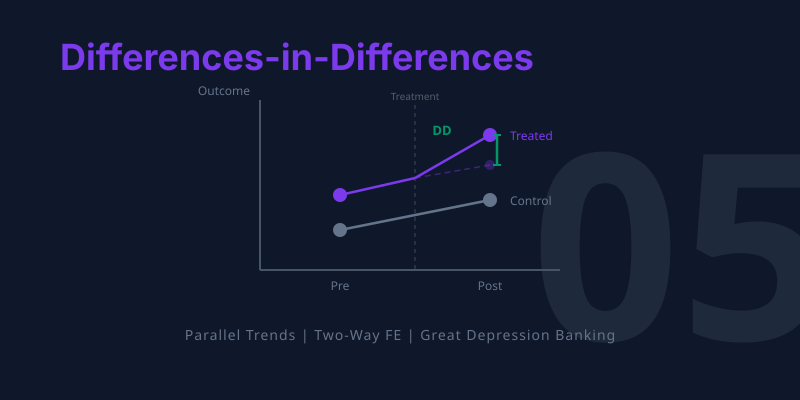
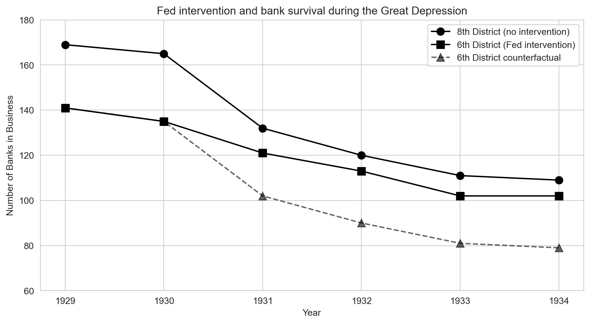

graph TD
A["THE QUESTION: Did Fed intervention save banks during the Great Depression?"]
B["THE INSIGHT: Compare changes in treated vs. control groups over time"]
C["THE ASSUMPTION: Without treatment, both groups would have followed parallel trends"]
D["THE TOOL: Regression with state and year fixed effects"]
E["THE EVIDENCE: Banking crises and drinking age mortality"]
A --> B --> C --> D --> E
style A fill:#3498db,color:#fff
style B fill:#e67e22,color:#fff
style C fill:#c0392b,color:#fff
style D fill:#8e44ad,color:#fff
style E fill:#2d8659,color:#fff
5. Differences-in-Differences

TipLearning Objectives
By the end of this chapter, you will be able to:
- Explain the difference-in-differences (DD) strategy for causal inference
- Construct a counterfactual using a control group’s trajectory
- State and assess the parallel trends assumption
- Estimate DD effects using regression with fixed effects
- Understand why state-specific trends, weighting, and clustered standard errors matter
- Interpret DD results from two case studies: banking crises and drinking age policy
This chapter introduces a method for settings where treatment is not randomly assigned but varies across groups and over time. By comparing changes rather than levels, DD removes time-invariant confounders.
A Mississippi Experiment
The Great Depression and the Fed
In 1930, the collapse of Caldwell and Company, a Nashville banking giant, triggered a cascade of bank failures across the American South. Within weeks, dozens of banks closed. The question for policymakers: could aggressive central bank intervention have prevented the collapse?
A natural experiment emerged from the structure of the Federal Reserve System. The border between two Fed districts runs through Mississippi, splitting the state between:
- 6th District (Atlanta Fed): favored easy credit and liquidity support for struggling banks
- 8th District (St. Louis Fed): followed a restrictive “Real Bills” doctrine, tightening credit during the crisis
Banks on either side of this border faced the same economic conditions but received very different policy responses.
# Load clean bank failure data (July 1 each year, both districts)
import pandas as pd
import numpy as np
import matplotlib.pyplot as plt
import seaborn as sns
import statsmodels.formula.api as smf
sns.set_style("whitegrid")
# --- Data source (GitHub URL with local fallback) ---
GITHUB_DATA_URL = "https://raw.githubusercontent.com/cmg777/intro2causal/main/data/"
LOCAL_DATA_PATH = "../../data/"
def load_csv(path):
"""Load CSV from GitHub raw URL; fall back to local path if unavailable."""
try:
return pd.read_csv(GITHUB_DATA_URL + path)
except Exception:
return pd.read_csv(LOCAL_DATA_PATH + path)
# bib6 = banks in business (6th district), bib8 = banks in business (8th district)
# counterfactual = what 6th district would look like under parallel trends
banks = load_csv("ch5/banks_clean.csv")
banks| year | bib6 | bib8 | counterfactual | |
|---|---|---|---|---|
| 0 | 1929 | 141 | 169 | 141 |
| 1 | 1930 | 135 | 165 | 135 |
| 2 | 1931 | 121 | 132 | 102 |
| 3 | 1932 | 113 | 120 | 90 |
| 4 | 1933 | 102 | 111 | 81 |
| 5 | 1934 | 102 | 109 | 79 |
Visualizing the DD
fig, ax = plt.subplots(figsize=(9, 5))
# Plot actual data for both districts
ax.plot(banks["year"], banks["bib8"], "ko-", markersize=8, label="8th District (no intervention)")
ax.plot(banks["year"], banks["bib6"], "ks-", markersize=8, label="6th District (Fed intervention)")
ax.plot(banks["year"], banks["counterfactual"], "k^--", markersize=8, alpha=0.6,
label="6th District counterfactual")
ax.set_xlabel("Year")
ax.set_ylabel("Number of Banks in Business")
ax.set_title("Fed intervention and bank survival during the Great Depression")
ax.legend()
ax.set_ylim(60, 180)
plt.tight_layout()
plt.show()
Computing the DD
The DD calculation compares changes across groups, which removes any fixed differences between the districts:
# Compute DD for each post-crisis year
rows = []
pre = banks[banks["year"] == 1930].iloc[0]
for _, row in banks[banks["year"] > 1930].iterrows():
# Change in each district relative to 1930
change_6 = row["bib6"] - pre["bib6"]
change_8 = row["bib8"] - pre["bib8"]
dd = change_6 - change_8
rows.append({
"Year": int(row["year"]),
"Change in 6th (treated)": int(change_6),
"Change in 8th (control)": int(change_8),
"DD estimate (banks saved)": int(dd),
})
pd.DataFrame(rows)| Year | Change in 6th (treated) | Change in 8th (control) | DD estimate (banks saved) | |
|---|---|---|---|---|
| 0 | 1931 | -14 | -33 | 19 |
| 1 | 1932 | -22 | -45 | 23 |
| 2 | 1933 | -33 | -54 | 21 |
| 3 | 1934 | -33 | -56 | 23 |
ImportantKey finding
The Atlanta Fed’s easy money policy saved approximately 19–23 banks relative to the restrictive St. Louis Fed approach. The DD works by subtracting the control group’s change from the treated group’s change, removing any common trends.
NoteIntuition Builder: The Diet Analogy
Suppose you and a friend both plan to eat well over the holidays. You go on a new diet; your friend doesn’t. After the holidays, you gained 2 lbs and your friend gained 7 lbs. Did the diet work?
- Naive comparison: You weigh more than before (gained 2 lbs) — diet “failed”?
- DD comparison: You gained 2, your friend gained 7. The diet saved you 5 lbs (7 − 2 = 5).
The key assumption: without the diet, you would have gained the same 7 lbs as your friend (parallel trends). DD uses the control group to estimate this counterfactual.
The DD Framework
The Core Logic
DD compares changes over time in a treatment group with changes in a control group:
\[\delta_{DD} = \underbrace{(\bar{Y}_{treat,after} - \bar{Y}_{treat,before})}_{\text{Change in treated}} - \underbrace{(\bar{Y}_{control,after} - \bar{Y}_{control,before})}_{\text{Change in control}}\]
graph TD
T1["Treated group: BEFORE"]
T2["Treated group: AFTER"]
C1["Control group: BEFORE"]
C2["Control group: AFTER"]
DT["Change in treated"]
DC["Change in control"]
DD["DD = Change in treated minus change in control"]
T1 --> DT
T2 --> DT
C1 --> DC
C2 --> DC
DT --> DD
DC --> DD
style DD fill:#2d8659,color:#fff
style DT fill:#3498db,color:#fff
style DC fill:#e67e22,color:#fff
The Parallel Trends Assumption
WarningThe key assumption
DD requires that, absent treatment, the treated and control groups would have followed parallel trends. The treatment and control groups can start at different levels — but their changes over time must be similar.
If this assumption fails (e.g., the treated group was already on a different trajectory), the DD estimate will be biased.
WarningCommon Misconception: DD does NOT require equal levels
Students often think DD requires the treatment and control groups to have the same level of the outcome. This is wrong. The 6th District had 135 banks and the 8th had 165 — very different levels. What matters is that they would have changed at the same rate without the intervention. Groups can start miles apart; DD only needs them to travel in the same direction at the same speed.
Case Study: MLDA and Death Rates
The Policy Variation
After Prohibition ended in 1933, states set their own drinking ages. In 1984, federal legislation pushed all states to adopt a minimum legal drinking age of 21, but states complied at different times. This staggered adoption creates variation for a DD analysis.
# Load clean MLDA death rate data (state-year panel, 18-20 year olds, 1970-1983)
# mrate = death rate per 100,000; legal = fraction of 18-20 yr olds who can legally drink
# dtype = cause of death (all, MVA, suicide, internal); pop = state population of 18-20 yr olds
deaths = load_csv("ch5/deaths_clean.csv")
deaths.head(3)| year | state | dtype | mrate | legal | pop | beertax | |
|---|---|---|---|---|---|---|---|
| 0 | 1970 | 1 | all | 153.870470 | 0.0 | 189770 | 1.373711 |
| 1 | 1970 | 1 | MVA | 62.180534 | 0.0 | 189770 | 1.373711 |
| 2 | 1970 | 1 | suicide | 2.107815 | 0.0 | 189770 | 1.373711 |
The Regression DD Model
With many states and years, DD is implemented as a regression with fixed effects:
\[Y_{st} = \alpha + \delta \, D_{st} + \sum_s \beta_s \, \text{STATE}_s + \sum_t \gamma_t \, \text{YEAR}_t + e_{st}\]
where \(Y_{st}\) is the death rate (mrate) in state \(s\) at time \(t\), and \(D_{st}\) is the fraction of 18–20 year olds who can legally drink (legal).
- State fixed effects (\(\beta_s\)) absorb permanent differences between states (culture, geography, road conditions)
- Year fixed effects (\(\gamma_t\)) absorb nationwide trends (vehicle safety improvements, national campaigns)
- \(\delta\) is the DD estimate: the causal effect of legal drinking access on the death rate
NoteWhy cluster standard errors by state?
The treatment variable (legal) changes at the state level, and death rates within a state are correlated over time. Clustering standard errors at the state level accounts for this serial correlation, preventing us from overstating precision.
Let’s start with a single regression for all-cause mortality:
# Filter to all-cause deaths
allcause = deaths[deaths["dtype"] == "all"]
# DD regression with state and year fixed effects
result = smf.ols(
"mrate ~ legal + C(state) + C(year)", data=allcause
).fit(cov_type="cluster", cov_kwds={"groups": allcause["state"]})
# Show just the key coefficient
coef_table = pd.DataFrame({
"Variable": ["legal"],
"Coefficient": [round(result.params["legal"], 2)],
"Std. Error": [round(result.bse["legal"], 2)],
"t-stat": [round(result.tvalues["legal"], 2)],
})
coef_table| Variable | Coefficient | Std. Error | t-stat | |
|---|---|---|---|---|
| 0 | legal | 10.8 | 4.59 | 2.35 |
Now let’s check across multiple causes of death and specifications:
# Four specifications for each cause of death
dtype_labels = {"all": "All causes", "MVA": "Motor vehicle", "suicide": "Suicide", "internal": "Internal"}
rows = []
for dtype_val, label in dtype_labels.items():
s = deaths[deaths["dtype"] == dtype_val].copy()
# Spec 1: State + Year FE, unweighted
r1 = smf.ols("mrate ~ legal + C(state) + C(year)", data=s).fit(
cov_type="cluster", cov_kwds={"groups": s["state"]})
# Spec 2: Add state-specific linear trends
# C(state):year = interaction of state dummies with year, giving each state its own slope
r2 = smf.ols("mrate ~ legal + C(state) + C(year) + C(state):year", data=s).fit(
cov_type="cluster", cov_kwds={"groups": s["state"]})
# Spec 3: Population-weighted (WLS)
# Weight by state population so larger states count more (more reliable death rates)
r3 = smf.wls("mrate ~ legal + C(state) + C(year)", data=s, weights=s["pop"]).fit(
cov_type="cluster", cov_kwds={"groups": s["state"]})
rows.append({
"Cause": label,
"Unweighted": f"{r1.params['legal']:.2f} ({r1.bse['legal']:.2f})",
"With state trends": f"{r2.params['legal']:.2f} ({r2.bse['legal']:.2f})",
"Pop. weighted": f"{r3.params['legal']:.2f} ({r3.bse['legal']:.2f})",
})
pd.DataFrame(rows)| Cause | Unweighted | With state trends | Pop. weighted | |
|---|---|---|---|---|
| 0 | All causes | 10.80 (4.59) | 8.47 (5.10) | 12.41 (4.60) |
| 1 | Motor vehicle | 7.59 (2.50) | 6.64 (2.66) | 7.50 (2.27) |
| 2 | Suicide | 0.59 (0.59) | 0.47 (0.80) | 1.49 (0.88) |
| 3 | Internal | 1.33 (1.59) | 0.08 (1.93) | 1.89 (1.78) |
ImportantInterpreting the DD results
- Legal drinking access increases the death rate by approximately 7–10 per 100,000 among 18–20 year olds
- Motor vehicle accidents account for most of the effect (~5–7 deaths)
- Internal causes (disease) show no significant effect — a placebo test confirming the design
- Results are robust to adding state-specific trends and population weighting
Robustness Checks
State-Specific Trends
Adding state-specific linear time trends is a more demanding test. It allows each state to have its own background trajectory and asks whether the MLDA effect is a deviation from this trend rather than a continuation of pre-existing patterns. The results hold up.
Beer Tax Control
Some states may have changed beer taxes at the same time as their MLDA. Controlling for beer taxes tests whether the MLDA effect is confounded by other alcohol-control policies:
rows = []
for dtype_val, label in [("all", "All causes"), ("MVA", "Motor vehicle")]:
s = deaths[deaths["dtype"] == dtype_val].dropna(subset=["beertax"]).copy()
r = smf.ols("mrate ~ legal + beertax + C(state) + C(year)", data=s).fit(
cov_type="cluster", cov_kwds={"groups": s["state"]})
rows.append({
"Cause": label,
"Legal effect": f"{r.params['legal']:.2f} ({r.bse['legal']:.2f})",
"Beer tax effect": f"{r.params['beertax']:.2f} ({r.bse['beertax']:.2f})",
})
pd.DataFrame(rows)| Cause | Legal effect | Beer tax effect | |
|---|---|---|---|
| 0 | All causes | 10.98 (4.69) | 1.51 (9.07) |
| 1 | Motor vehicle | 7.59 (2.56) | 3.82 (5.40) |
The MLDA coefficients are largely unchanged after controlling for beer taxes, reinforcing the causal interpretation.
Historical Perspective: John Snow
Long before modern econometrics, John Snow (1813–1858) used DD reasoning to solve one of the great public health mysteries: the cause of cholera.
In 1854 London, Snow noticed that cholera deaths were concentrated in neighborhoods served by the Southwark and Vauxhall water company, which drew from a contaminated stretch of the Thames. A competing company, Lambeth, had moved its intake upstream to cleaner water in 1852.
Snow compared the change in cholera death rates before and after Lambeth’s move, relative to Southwark and Vauxhall’s unchanged source. The dramatic decline in Lambeth-served neighborhoods — with no corresponding decline in Southwark areas — provided compelling evidence that contaminated water caused cholera, overturning the prevailing “miasma” (bad air) theory.
This was a DD analysis avant la lettre: two groups (water companies), a treatment that changed for one but not the other, and a comparison of changes in outcomes.
How DD Compares to Other Methods
| Feature | RCT (Ch 1) | IV (Ch 3) | RD (Ch 4) | DD (This Chapter) |
|---|---|---|---|---|
| Key requirement | Random assignment | Valid instrument | Sharp cutoff | Parallel trends |
| Handles unobservables? | Yes (by randomization) | Yes (via instrument) | Yes (at the cutoff) | Only time-invariant ones |
| Estimates | ATE | LATE (compliers) | Local effect (at cutoff) | ATT (treated group) |
| Data structure | Cross-section | Cross-section or panel | Running variable | Panel (group × time) |
NoteConnection to Chapters 1 and 4
DD complements the other methods:
- vs. RCTs (Chapter 1): DD works when randomization is impossible but policy varies across groups and time. It sacrifices the randomization guarantee for broader applicability.
- vs. RD (Chapter 4): Both exploit policy rules, but RD uses a cutoff in a running variable while DD uses changes over time. The MLDA question appears in both chapters: Chapter 4 uses the age-21 cutoff (RD); this chapter uses state-level policy changes over time (DD). Same question, different identification strategies.
Key Takeaways
graph TD
Q["Policy varies across groups and time"]
DD["DD: compare changes in treated vs. control"]
PT["Parallel trends assumption must hold"]
FE["Regression with state and year fixed effects"]
ROB["Robustness: trends, weights, placebos"]
EV["Evidence: Fed saved banks; MLDA increases deaths"]
Q --> DD
DD --> PT
DD --> FE
FE --> ROB
ROB --> EV
style Q fill:#3498db,color:#fff
style DD fill:#8e44ad,color:#fff
style PT fill:#c0392b,color:#fff
style FE fill:#e67e22,color:#fff
style EV fill:#2d8659,color:#fff
DD compares changes over time between treatment and control groups, removing time-invariant confounders.
The parallel trends assumption is key: absent treatment, both groups must have been on the same trajectory.
Regression DD with fixed effects is the standard implementation for multi-group, multi-period settings.
State fixed effects remove permanent state differences; year fixed effects remove common time trends.
Cluster standard errors at the level of treatment assignment (e.g., state) to account for serial correlation.
Robustness checks include state-specific trends, population weighting, and placebo tests on unaffected outcomes.
Exercises
Conceptual Questions
CautionConceptual Questions
Parallel trends: A city implements a minimum wage increase in 2020. You plan to compare employment changes in that city with a neighboring city that didn’t raise the minimum wage. What would it mean if the two cities already had diverging employment trends before 2020? How would this affect your DD estimate?
Computing DD: Before a policy change, the treatment group’s outcome average is 50 and the control group’s is 40. After the change, they are 55 and 48. (a) Compute the DD estimate. (b) What assumption is needed for this to be causal?
Fixed effects: Explain in your own words why we need both state and year fixed effects in the MLDA regression. What would happen if we omitted state effects? Year effects?
State-specific trends: Explain what adding
C(state):yearto the DD regression does. Under what circumstances might the DD estimate change substantially when you add state-specific trends, and what would that imply about the parallel trends assumption?Placebo test design: You are studying whether a new air pollution regulation reduced asthma hospitalizations. Propose a placebo outcome that should NOT be affected by the regulation. Why would finding a significant effect on your placebo outcome be concerning?
Research Tasks
CautionResearch Tasks
DD for suicide deaths: Using
deaths_clean.csv, run the DD regression for suicide deaths (dtype == "suicide") with state and year fixed effects and state-clustered SEs. Is the effect of legal drinking significant for suicides? How does the coefficient compare to the all-cause result?DD over time for banks: Using
banks_clean.csv, compute the DD estimate for each post-crisis year (1931, 1932, 1933, 1934) relative to the 1930 baseline. Does the effect grow or shrink over time? What does this trend suggest about the lasting impact of the Fed’s intervention?Population-weighted DD: Using
deaths_clean.csv, run the all-cause DD regression with population weights (smf.wlswithweights=pop). Compare the coefficient with the unweighted result. Why might weighting by population change the estimate?
Solutions
Conceptual Questions
Q1. If the two cities already had diverging employment trends before the minimum wage increase, the parallel trends assumption is violated. The DD estimate would capture both the causal effect of the policy and the pre-existing trend difference. For example, if the treatment city’s employment was already declining faster, the DD estimate would overstate the negative effect of the minimum wage. You could test for this by plotting pre-treatment trends and checking whether they are parallel.
Q2. (a) DD = (55 − 50) − (48 − 40) = 5 − 8 = −3. The treatment group’s outcome fell by 3 units relative to the control group. (b) The parallel trends assumption must hold: absent the policy change, both groups would have experienced the same change over time. Here, the control group rose by 8, so we assume the treatment group would have also risen by 8 without the policy — making the treatment effect −3.
Q3. State fixed effects control for permanent differences between states (e.g., some states have higher death rates due to geography, culture, or road conditions). Without them, we might confuse these permanent differences for the effect of MLDA policy. Year fixed effects control for nationwide changes over time (e.g., improvements in vehicle safety or changes in drinking culture). Without them, we might attribute a nationwide trend in mortality to MLDA changes. Both are needed to isolate the within-state, within-year variation in MLDA policy.
Q4. Adding C(state):year allows each state to have its own linear time trend. This is more demanding than standard DD because it asks: did the MLDA effect cause a deviation from the state’s own trend, not just from the national average trend? The DD estimate might change substantially if some states were on different trajectories for reasons unrelated to MLDA (e.g., southern states experiencing rapid economic changes). A large change would suggest the standard parallel trends assumption is questionable and that state-specific trends are needed to get a reliable estimate.
Research Tasks
R1.
import pandas as pd
import statsmodels.formula.api as smf
deaths = load_csv("ch5/deaths_clean.csv")
rows = []
for dtype_val, label in [("all", "All causes"), ("suicide", "Suicide")]:
s = deaths[deaths["dtype"] == dtype_val].copy()
r = smf.ols("mrate ~ legal + C(state) + C(year)", data=s).fit(
cov_type="cluster", cov_kwds={"groups": s["state"]})
rows.append({
"Cause": label,
"Legal effect": round(r.params["legal"], 2),
"SE": round(r.bse["legal"], 2),
"t-stat": round(r.tvalues["legal"], 2),
})
pd.DataFrame(rows)| Cause | Legal effect | SE | t-stat | |
|---|---|---|---|---|
| 0 | All causes | 10.80 | 4.59 | 2.35 |
| 1 | Suicide | 0.59 | 0.59 | 1.00 |
The suicide effect is much smaller than the all-cause effect and is not statistically significant (t-stat well below 2). While alcohol can contribute to suicide through impaired judgment, the DD analysis does not find strong evidence that MLDA changes substantially affected suicide rates. The all-cause result is driven primarily by motor vehicle accidents.
R2.
banks = load_csv("ch5/banks_clean.csv")
# Compute DD for each year relative to 1930 baseline
pre = banks[banks["year"] == 1930].iloc[0]
rows = []
for _, row in banks[banks["year"] > 1930].iterrows():
change_6 = row["bib6"] - pre["bib6"] # change in treated (6th district)
change_8 = row["bib8"] - pre["bib8"] # change in control (8th district)
dd = change_6 - change_8 # DD = treated change - control change
rows.append({
"Year": int(row["year"]),
"Change in 6th (treated)": int(change_6),
"Change in 8th (control)": int(change_8),
"DD (banks saved)": int(dd),
})
pd.DataFrame(rows)| Year | Change in 6th (treated) | Change in 8th (control) | DD (banks saved) | |
|---|---|---|---|---|
| 0 | 1931 | -14 | -33 | 19 |
| 1 | 1932 | -22 | -45 | 23 |
| 2 | 1933 | -33 | -54 | 21 |
| 3 | 1934 | -33 | -56 | 23 |
The DD effect grows from 19 banks in 1931 to 23 in 1932, then stabilizes around 21 in 1933–1934. This suggests the Fed’s intervention had a lasting protective effect: the banks it saved in the early crisis years remained in business through the worst of the Depression. The gap between districts didn’t close as the crisis deepened, indicating the initial intervention had durable benefits.
Q5. A good placebo outcome would be hospitalizations for broken bones or appendicitis — conditions unrelated to air quality. If the air pollution regulation appears to significantly reduce broken-bone hospitalizations, something is wrong: either the regulation coincided with another change (confounding), or the parallel trends assumption fails. A significant placebo effect undermines confidence in the main result because it suggests the DD is picking up spurious trends rather than the causal effect of the regulation.
R3.
import pandas as pd
import statsmodels.formula.api as smf
deaths = load_csv("ch5/deaths_clean.csv")
allcause = deaths[deaths["dtype"] == "all"]
# Unweighted
r_uw = smf.ols("mrate ~ legal + C(state) + C(year)", data=allcause).fit(
cov_type="cluster", cov_kwds={"groups": allcause["state"]})
# Population-weighted
r_wt = smf.wls("mrate ~ legal + C(state) + C(year)", data=allcause, weights=allcause["pop"]).fit(
cov_type="cluster", cov_kwds={"groups": allcause["state"]})
pd.DataFrame({
"Specification": ["Unweighted OLS", "Population-weighted WLS"],
"Legal effect": [round(r_uw.params["legal"], 2), round(r_wt.params["legal"], 2)],
"SE": [round(r_uw.bse["legal"], 2), round(r_wt.bse["legal"], 2)],
})| Specification | Legal effect | SE | |
|---|---|---|---|
| 0 | Unweighted OLS | 10.80 | 4.59 |
| 1 | Population-weighted WLS | 12.41 | 4.60 |
Population weighting gives more influence to large states (California, Texas) where death rates are measured more precisely. The weighted estimate is often slightly different because MLDA effects may vary by state size. If the estimates are similar, it suggests the effect is consistent across large and small states.